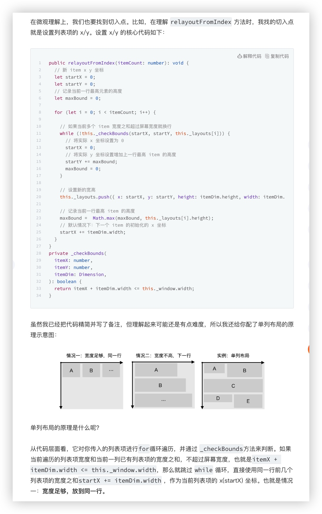
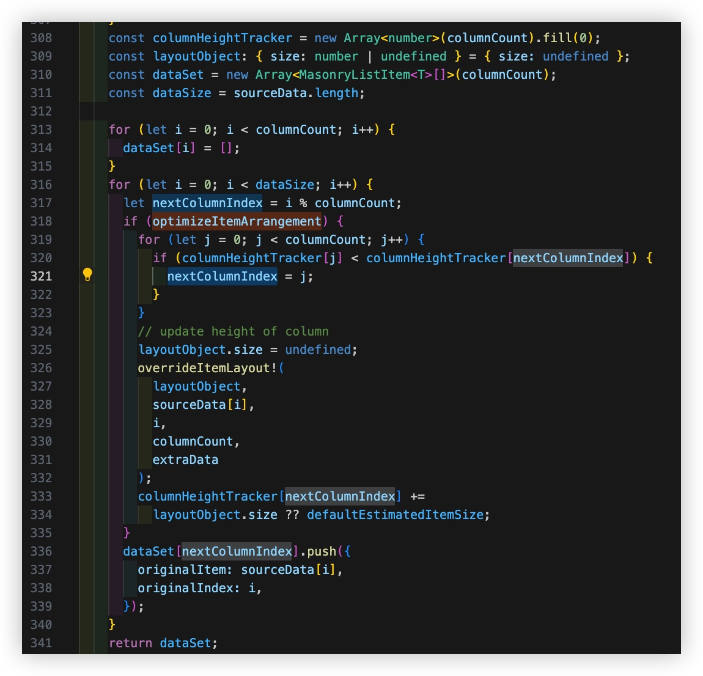
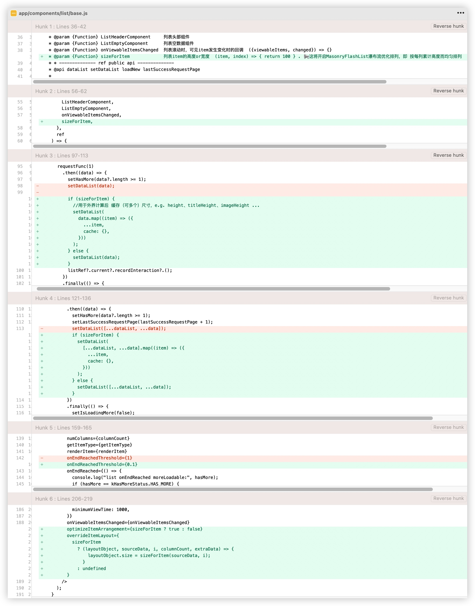

瀑布流最佳实践：双列均匀分布，高度计算&缓存
By yestin
MasonryFlashList 瀑布流布局列高不均 解决方案
瀑布流布局列高不均 演示效果
最终我对此做了回复 👉🏻 issues/946#issuecomment-1972392998
方法1：【仅解决了双列】58的方案
但，只修改为了 支持双列瀑布流布局，也不是基于最新recyclerlistview版本
58大佬分析的 recyclerlistview的布局原理，Nice 
方法2：【较完美的】Masonry layout manager and provider #526 方案
可惜，并没有被merge，作者似乎不再关注这个项目了。
然后，也没有提供patch，但有人提供了package 和 Demo，非常赞！
👉🏻 方案来源
- package: recyclerlistview-masonrylayoutmanager
- Demo: https://snack.expo.dev/@robertli93/grid_example
Demo效果非常棒！ 滚动流畅 + 布局均匀
为何未被合并？
难道是因为PR评论区的已知小bug？还是作者不再维护？
方法3:【最完美】MasonryFlashList 本身支持优化排列
见官方文档 masonry#optimizeitemarrangement
If enabled, MasonryFlashList will try to reduce difference in column height by modifying item order. If true, specifying overrideItemLayout is required. Default value is false.
在看源码时，发现MasonryFlashList.tsx中，底部可见如下说明
* FlashList variant that enables rendering of masonry layouts.
* If you want `MasonryFlashList` to optimize item arrangement, enable `optimizeItemArrangement` and pass a valid `overrideItemLayout` function.
optimize Item Arrangement，即 优化Item的布置/排列
布局规则 核心代码 
默认分配规则
columnCount列，对应dataSet下有多少个数组，对应有多少个FlashList
dataSet下各数组(各列表数据) 是根据i % columnCount在数量上公平分配的
optimizeItemArrangement 排列规则
optimizeItemArrangement，则改为 基于
列高度累计上公平分配。
每次分配前，通过columnHeightTracker[j] < columnHeightTracker[nextColumnIndex]判断，每次把Item分配给 高度累计最少的那一列
基于此，做如下改动
-
对底层封装组件
BaseList，增加 入参 - 高度计算函数sizeForItem 注意：其中还为dataList中的各个元素 增加了cache键，用于缓存各种计算值
附:
BaseList源码 👉🏻 base -
在
Item组件中，增加 高度计算函数实现export const sizeForItem = (item) => { const { previewUri, title, tags, cache } = item; console.log("item.cache:", item.cache); //使用缓存高度，避免重复计算，减少性能消耗 if (cache[kHeightCacheKey]) return cache[kHeightCacheKey] + px2dp(15); let imageHeight = getHeightFromSize(parseSize(previewUri)) || imageSize; cache[kImageHeightCacheKey] = imageHeight; let titleH = getHeightWithText({ text: title, fontSize: styles.title.fontSize, lineHeight: styles.title.lineHeight, maxNumberOfLines: 2, maxWidth: cellWidth - styles.title.paddingHorizontal * 2, }); cache[kTitleHeightCacheKey] = titleH; let totalH = Math.ceil(imageHeight) + cellBorderWidth * 2 + Math.ceil(styles.title.marginTop) + Math.ceil(titleH) + Math.ceil(tags?.[0] ? px2dp(5) : 0) + Math.ceil(tags?.[0] ? px2dp(20) : 0) + Math.ceil(px2dp(30)); cache[kHeightCacheKey] = totalH; return totalH + px2dp(15); };注意:
实际上， 组件自适应高度 与 计算所得高度 有点偏差，会导致列表数据刷多了后，仍会出现两列分布不均于是，上面代码中每个(带text的)组件高度计算后，需要向上取整，比如 23.3 -> 24
并且，将计算的各组件高度，缓存到cache对象中，并且将使用这些值 设为组件style中的height
这样就避免了 组件自适应高度 与 计算高度 之间的偏差！！另外， 调用
sizeForItem时，优先使用缓存高度，避免重复计算，减少性能消耗附:
1种Item使用源码 👉🏻 ImageTextFeed -
高度计算对比了2个，发现58的方案更好